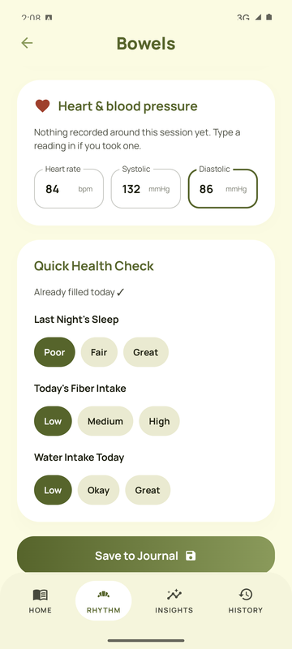
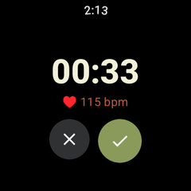
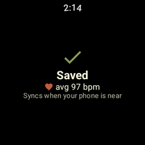

Discrete tracking
Capture symptoms, meals, and patterns with a lightweight flow designed for fast check-ins on mobile, even when you're offline.
BOWELS is a private digestive health tracker for Android and Wear OS, built for people who want calm, offline-first logging without accounts, cloud sync, or surveillance. Log from your phone or straight from your watch, see your heart rate and blood pressure from each session, and keep every record on your own device.
Capture symptoms, meals, and patterns with a lightweight flow designed for fast check-ins on mobile, even when you're offline.
Your records stay on the device instead of being uploaded to a remote analytics pipeline or tied to an account.
Useful patterns and summaries can be generated from your own data without turning your health history into a product.
Phone in another room? Start and finish a session on your Wear OS watch. It syncs to your phone by itself once they're back together.
See what your heart and blood pressure were doing during each session, from your watch, from Health Connect, or typed in.
Weekly Wrapped and milestones turn into crisp, story-sized images you can share or save, never stretched screenshots.
Tap start on your watch, finish when you're done, and answer three quick taps. The watch measures your heart rate the whole time and keeps the session until your phone is near again.



BOWELS removes the usual middle layer between you and your own health records. That means less friction, fewer privacy worries, and a much more dependable offline experience.
The default for sensitive tracking should be local ownership, transparent behavior, and no forced dependency on a centralized service.
BOWELS treats digestive health data as deeply personal information, not engagement fuel or analytics inventory.
If the app is on your phone, your history should stay there by default and keep working without network dependency.
Tracking health can already be stressful. The interface should feel reassuring, direct, and friction-light on mobile screens.
The phone app needs Android 8.0 or newer, and updating it keeps all your history. The watch app (Wear OS 3 or newer) installs from a computer over Wi-Fi for now; the watch guide walks you through it in about five minutes.